2026-01-22
----------
Something important has happened. On 2026-01-12, the police visited my apartment again, and I was once again forced to visit CAMH.
Interactions at the Door
------------------------
I first knew the police were there when they knocked on the door of my apartment. I looked through the hole in the door to see who they were, and they looked like they were the police, so I decided to open the door. One of the officers started to explain that they had a document from a judge, and he said enough that I was pretty sure it was another Form 2 filled out by my parents. I closed the door before he could finish the sentence and locked the deadbolt.
I had been thinking about what I would do if this situation occurred again. After the police had been here before with a Form 2, I had done some research. The Canadian Charter of Rights and Freedoms has a section 9 which says that everyone has the right not to be arbitrarily detained or imprisoned. As far as I understand it, the rights granted under the Canadian Charter of Rights and Freedoms cannot be taken away in bills like the Mental Health Act, which is where the Form 2 is defined. I felt that taking me to CAMH against my will was a form of being detained as defined in the Charter. I also felt it was arbitrary, because I was pretty sure that I did not have a mental illness that would require me to be forcibly brought anywhere. I felt that it was unlikely that my parents were actually concerned about my mental health. I felt that therefore this meant that it was not legal for the police to detain me.
I tried to explain my legal theory regarding the Charter to the police officers outside my apartment door. They listened to what I had to say but it seemed like they had decided that they had to take me with them regardless. During the conversation, they made a few comments that gave me the impression that they might have read my website, in addition to having the Form 2 from my parents, though I am not sure. My website contains a description of the first time the police took me to CAMH.
In the end, I was not able to convince the police that the Form 2 was not valid. The police spoke to the building employees and obtained a key to my apartment. They put the key into the lock, and tried to unlock the deadbolt. I held the deadbolt closed with my fingers, and braced against the door with my shoulder. The police started kicking the door. I kept talking to the police and kept trying to convince them to stop. The force of the kicking caused the ring around the handle of the door to start coming off. After a while there was a brief pause. I looked through the hole in the door, and I could see that the police had a battering ram aimed directly at me. I considered backing away from the door, however I wanted to make sure I had done everything I possibly could to stay inside the apartment, and so I braced against the door again even though they were about to use the battering ram. After multiple uses, the battering ram worked. The door opened and the police rushed in. They immediately put me in handcuffs.
Reddit Post
-----------
The events that I just described occurred on 2026-01-12. Before that, on 2026-01-10, I created a Reddit post in which I described a problem I have been having in the building that I live in. After I made the post, I received a bunch of replies from people dismissing my problems and telling me that I had a mental illness. The Reddit post and my replies all received a lot of down votes. I personally found this strange. I was pretty sure that my description of the situation was reasonable. It seemed like there should have been more people that agreed with me. Some of the replies made me think that the other Reddit users might actually be my neighbours, or otherwise be people who have some connection to the situation aside from reading my Reddit post. If that was the case, maybe that was why it seemed like a lot of people who replied were disagreeing with me.
The Reddit post was made on 2026-01-10, which was a short enough time before 2026-01-12 that it seems unlikely that anyone would have enough time to go to a judge and get them to approve a Form 2 as a consequence of the Reddit post. However, the other Reddit users made a lot of references to mental illness, and some of the things they said made it seem like they might have known in advance that a Form 2 would soon be filled out. If they did know in advance, I wonder what they were expecting to happen and why they wanted me to go to CAMH.
Travelling to CAMH
------------------
After the police took me from my apartment, they brought me to a police car and an officer started driving me to CAMH. I spoke to him as he drove. I explained that I had been in my apartment for almost two years. I also told the officer that I had been having a dispute with my neighbours and the employees of the building I live in, and that I was concerned about leaving my property unattended. I asked the officer if was possible to have another police officer stay at my apartment door until I returned. He told me that it might be possible, but did not commit to anything.
Once we arrived at CAMH, they took me inside. I had a moment to chat with two of the police officers just inside the door. I talked about my website, and said things to try to convince them to read it. I told them that there was a page on my website where I had mentioned that I owned shares in the company Groq, where I had worked previously, and that 10 days after I put the page online, Groq was paid $20 billion. I am not sure what they thought about that.
The officers then took me into a security area where some CAMH employees took my coat and other belongings and put them into a big plastic bag. At this point, people started giving me some information about what my parents had said to bring me there. Apparently they felt I had made concerning statements on my website. In particular, they were concerned that I had said that I wanted to "blow up" something. My parents also told the police that they felt I might be suicidal and might jump off of my apartment balcony when the police arrived.
I spoke to one of the CAMH employees and tried to get them to understand my point of view. I told them that I was describing something on my website that was legal, and that I specifically mentioned that I would not break the law when I wrote my description. I told them that I was allowed to do things that are legal. I told them that in the United States, there are places you can rent tanks just to drive them over cars if that is what you want to do. The CAMH employee asked if I was saying I wanted to destroy cars. I replied and told them no, I was just trying to say that sometimes people destroy things for entertainment.
CAMH Waiting Area
-----------------
After leaving my possessions with the CAMH employees, I was brought to a waiting area to wait to speak to a doctor. The police told me they were going to stay to watch me until they were sure I had spoken to the doctor. This was similar to the first time that the police brought me to CAMH.
I was curious if the officers had read my website before picking me up from my apartment. I asked one of the officers if they had a cottage, which was was something that one of the officers had mentioned the first time I was brought to CAMH. The officer did not seem to recognize that I was making a reference to my website, so I explained that one of the officers had a cottage the first time I was brought to CAMH. At this point, another officer responded and suggested that one of the officers that brought me to CAMH the first time was black and had dreads and asked me if that was correct. If I remember correctly, there was someone fitting that description in the waiting room at the time that the officer was speaking. It seemed like he might be testing my memory to see if I correctly remembered the officers or if I was making it up. I replied and told him that no, both officers were white the first time I was brought to CAMH. The second time I was brought to a mental health facility, when I was brought to a different hospital than CAMH, there was an officer that was black.
Eventually, the doctor was ready to speak with me, and the police officers left. I was taken to a small room to speak to the doctor. He asked if I knew why I was there. I told him that I was there because my parents had filled out a Form 2, and that in my opinion they had filled out the Form 2 as a way of harassing me. He asked me some basic medical questions. At one point he asked me where I was from and I told him I was from Newfoundland. He looked at me strangely, and it seemed like he did not know where that was. I asked him if he knew where it was, and he told me he did not, so I told him it was the big triangle shaped island on the right hand side of Canada when you look at a map. After this, he told me that he wanted to speak with my parents to get more information about me, and so I went back to the waiting room.
After the doctor was finished having discussions with my parents, he returned and gave me his decision. In his opinion, I needed to stay at the hospital for observation for 72 hours. He gave me a Form 42, and checked a box saying that he felt he had reasonable cause to believe that I had "behaved or are behaving violently towards another person or have caused or are causing another person to fear bodily harm from me". He did not explain what I had done that had caused him to believe that.
I was then brought back again to the waiting area. The people working there then asked if I wanted to speak with my parents. Apparently, my parents were actually physically in the building. I told the CAMH employees that I did indeed want to speak with my parents. My parents came into the waiting area. They both looked like they had recently been crying, and had puffy red eyes. This seemed very strange to me, because nothing had happened recently that should make them upset. My parents had apparently filled out this Form 2 because of the statements I had made on my website, and I did not say anything on my website that should make them that upset.
I decided to speak loudly when I was chatting with my parents, because I hoped that this would give the people around me more information about my situation. It seemed to me that my parents most likely had been manipulating the CAMH employees by providing false or misleading information about me. I made it clear that I did not think my parents had legitimate reasons to bring me to CAMH. I was also trying to indirectly get people in the room to read my website, so I loudly mentioned that on my website I had posted an idea for ending homelessness.
After my parents left, a nurse that was assigned to me started asking me some questions about my previous visits to CAMH and another mental health hospital in Toronto. I explained the circumstances behind each visit and tried to justify why those visits did not indicate that I had a mental illness. I am not sure what they thought, as I was still talking pretty loudly after the chat with my parents. I then sat down next to a phone charger to charge my phone, and chatted quietly with a patient that was sitting nearby. Eventually, they brought me to a private room to spend the night.
The Day in the Emergency Department
-----------------------------------
I did not sleep very well the first night. I normally consume marijuana before sleeping, and it takes a few days to adjust when I stop. I spent most of the night partially awake, occasionally checking my watch to see how many hours were left.
The private room was very basic, containing only a bed and a table. There was an outlet with a USB port above the table, however I did not have a cable, so I did not charge my phone during the first night. Once morning came, I asked a CAMH employee about it, and they were able to provide me with a short USB cable. Unfortunately, the cord was so short that it was shorter than the distance from the outlet to the table. I had to prop up the phone using one of the containers that food had arrived in, so that the cord could reach the outlet.
After some time passed, I spoke with another doctor. I described my situation. I told them that I felt that my parents did not have a valid reason to fill out the Form 2. I told the doctor about the history with my parents. I told them that the first time I had been brought to CAMH I actually had just been misinterpreting YouTube video thumbnails. I asked if I could go home. The doctor told me that in their opinion, I was experiencing psychosis, so I could not leave. They then left me alone in my private room.
I spent most of the day pacing around my private room and a larger area connected to it. In the larger area, there was a sign saying "CAMH has Zero Tolerance for all forms of violence". I wondered why that did not apply to the door of my apartment, which had been opened with a battering ram in order to bring me to CAMH.
At one point I spoke with one of the CAMH employees, thinking that I might be able to convince people that I was sane so that I could leave early. I told the CAMH employee that I had been brought to CAMH because of my website, and I tried to describe it in an interesting way. I told them that it had a lot of Israel and Palestine content, and I told them that my parents were apparently upset because I wanted to build a drone swarm. I told them that I did not trust my parents, and that I was worried they might be planning to enter my apartment while I was in CAMH. I tried to seem as sane as possible. I asked them to put in a good word for me with the other CAMH employees.
Eventually, after spending most of the day waiting, I was told that I was going to be moved to a nicer room on a higher floor. I collected my possessions, and we took an elevator to the higher floor. When we arrived at the new room, I could see that it was indeed nicer. It had a private bathroom. Unfortunately, however, I could not take the phone charger with me that I had been using in the previous room. It was late in the day, so I put the phone in airplane mode. I spent the rest of the day lying on the bed, waiting.
The Day Upstairs
----------------
I did not sleep very well the second night either. I was still experiencing symptoms associated with marijuana withdrawal. When it became morning, I walked around and explored the limits of the area that I had access to. There was an office and a common area with seats, along with locked doors that led into a common area where they served food. There was also another hallway with private rooms.
I found an employee and asked them if there was a way that I could get a phone charger. They offered to charge my phone in the office, however I felt uncomfortable leaving it there. Thankfully, when I told them this, they looked in the office and were able to find another short charging cable that I could use to charge my phone in my private room. I went back to my room and started charging my phone.
Eventually, a CAMH employee came to me and told me that the doctor was ready to speak with me. They brought me to a small room where there was a doctor and a social worker waiting for me. The doctor told me that my parents had contacted a lawyer who had written a letter to try to convince the CAMH employees that I should be required to stay for a longer period than 72 hours. The doctor listed some of the justifications given, all of which appeared to be based on things that I had said on my website. They were concerned that I wanted to build a drone swarm, and they said that I had a grandiose delusion that I was personally bringing peace to the middle east. I told them that many of the things they had said about my website were factually correct, but were being described in a way that made them sound grandiose or dangerous when they were not.
I started giving the doctor and the social worker more information on the back story with regards to my previous visits to CAMH and the other mental health hospital as well as my history with my parents. I told them that the first time I had been to CAMH, it had just been because of some YouTube video thumbnails. I opened my website and showed them examples of the YouTube video thumbnails. They listened to what I had to say. At the end of our conversation, they told me that I still had to stay at the hospital for the full 72 hours, and so I would not be able to leave until the following day. The doctor offered to prescribe me anti-psychotic medication, and I declined.
At this point, I started trying to leave my private room a bit more often. I sat in the common area where food was served and read my phone. I chatted with some of the other CAMH patients. I did a lot of waiting. Eventually, night time came and I went to my private room to sleep.
The Last Day
------------
When the morning of the fourth day came I was ready to leave. Early in the day, I was visited by the social worker that I had spoken to previously, who told me that they, along with my doctor, were going to chat with my parents at 10 am. I told them that my parents were very manipulative, and that I did not trust them to chat with my parents without me being present. I asked if I could join them at 10 am. They told me this was not possible.
After the meeting with my parents was over, the doctor and the social worker returned to my room, and told me that I could now leave. They told me that my parents were going to take me home. They left my room, and I started to prepare my things. I looked at my phone and noticed that my brother had sent me a text message asking me what I thought of my diagnosis. I had no idea what he was talking about, as the doctor had not diagnosed me with anything. I went into the hallway and confronted the doctor and the social worker and asked them if they had diagnosed me with a mental illness.
The doctor told me that they felt I had "unspecified schizophrenia spectrum and other psychotic disorder". I asked them why they had not told me that they were diagnosing me with a specific mental illness. The doctor replied and told me that they figured that I would know because they had offered to prescribe anti-psychotic medication in the previous meeting. I told them that this was not the case and that I did not know. I asked them to write the name of the illness down on a piece of paper, along with their name and the date.
Going Home
----------
After finishing with the doctor and the social worker, I met my parents. After the police had broken into my apartment using the battering ram, the lock had to be replaced. For some reason, the building employees had given my parents the key to my apartment to give to me, even though I had previously told them I was afraid of my parents and to not allow my parents into the building at all. In any case, my parents gave me the key. We then took an Uber to my building, where I was dropped off and my parents left.
Diagnosis
---------
This was a very strange experience for me, particularly because I think it is obvious that I am not schizophrenic. I found a description of "unspecified schizophrenia spectrum and other psychotic disorder" online. It clearly says that hallucinations are a primary symptom of the disorder, and I have not experienced any hallucinations.
The first time I was taken to CAMH, it was because I had seen YouTube video thumbnails that made it appear as if my computer had been hacked. I can understand why others might have thought I was describing a hallucination, because I was describing something strange that I had visually observed, however those YouTube video thumbnails fully existed and I did not imagine them, so they were not a hallucination. Unfortunately, the more I think about it, the more I think the doctors might have mentioned this "unspecified schizophrenia" disorder the first time I was at CAMH. At the time, however, I was barely paying attention because I just wanted to leave CAMH. Maybe what has happened is that my parents told others at the time that I had been diagnosed with schizophrenia, and that is the reason why many people ignore my messages and seem to treat me like I have a mental illness today.
Based on various things that doctors have said, it seems like the "unspecified schizophrenia" disorder might be a diagnosis that is commonly used when someone tells them that they use marijuana. I have gotten the impression that none of the doctors I have spoken with consume marijuana themselves or are part of a social group that includes people who consume marijuana. I suspect this might be part of the reason why they view it as concerning.
After doing some of my own research, I personally think the mental illness that best describes my situation is actually post-traumatic stress disorder. The original traumatic event was the first time I was taken to CAMH in 2021, when I believed my computer had been hacked, and then due to unfortunate timing, believed that the police, my parents, and my coworkers might have been involved in the computer hack and therefore were part of a criminal gang. Given that my family absolutely insists that I have a mental illness of some kind, maybe PTSD is the illness that I have that will satisfy them.
Overall, I found this visit to CAMH somewhat therapeutic, which might sound strange. I am glad that the police used a battering ram to open my door, because now I have something physical to show people. When I was taken in 2021, there was no visible damage, and so it was not as obvious that something significant had happened. I like that in this case, it is very obvious that I did not voluntarily go to CAMH. As well, even though I did not choose to go, I also kind of appreciate that at CAMH it seemed like people wanted me to be there and were not just trying to get me to leave. At the moment, I do not know any other place like that.
The experience of being forced to be at CAMH also had an interesting psychological aspect. It felt like we were role playing in some kind of BDSM experience, where I was submissive, and the CAMH employees were dominant. I was brought there against my will, and yet I was forced to wait to speak to a doctor. I had to ask permission for everything. My meals were chosen for me and were only given to me at certain times. I was only allowed to use short phone charging cables. Many things were inconvenient. I was treated like I might be suicidal or like I was psychotic even though it was clearly not true.
In a strange way I kind of enjoyed parts of the experience and want to be able to experience something like that again. However, it is pretty important that people know that I actually am not schizophrenic. It also should be consensual and the people being dominant all need to be female. I also need to solve the problem I am having that is causing me to be unable to leave the apartment if I am going to leave to go somewhere else.
Photos
------
CAMH Stuff
{kind=link}
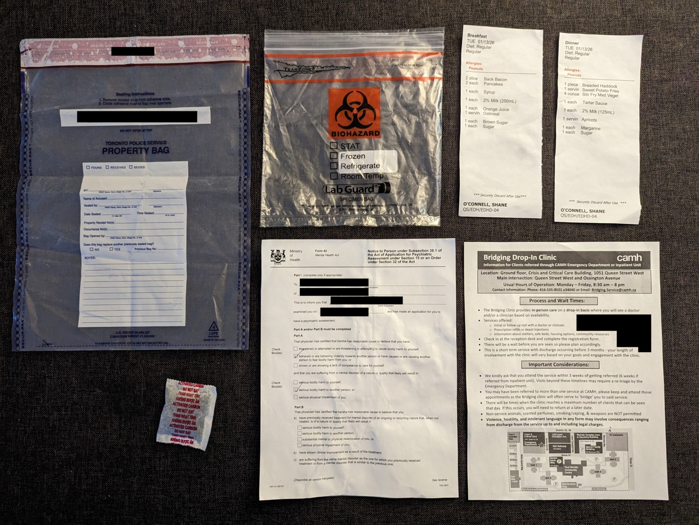
This photo contains everything that I was given to take with me after leaving CAMH. The social worker gave me their business card, however I lost it on the way home.
I actually was not given a copy of the original Form 2 that the police showed me when they came to my apartment.
Form 42
{kind=link}
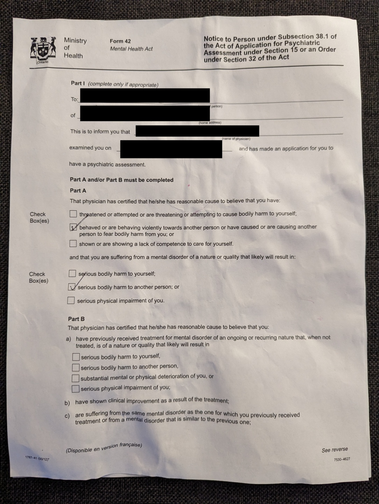
{kind=link}
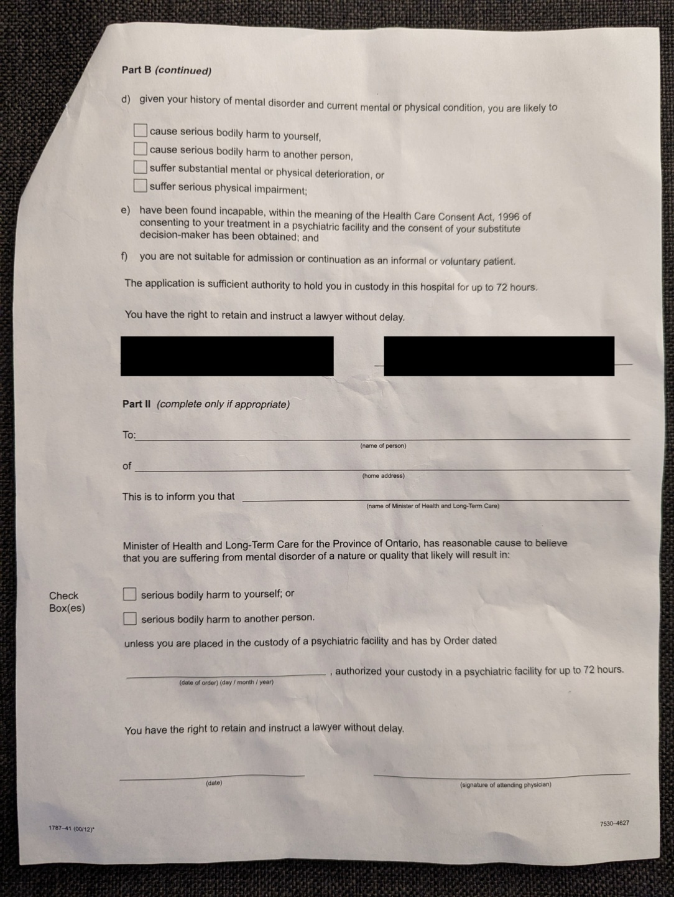
The form that was filled out to justify why I had to be held for 72 hours after arriving at CAMH. I have covered up all of the handwritten information in order to hide the identity of the doctor that filled out the form. Under the black boxes, the form has my name and specifies a date of 2026-01-12.
The doctor filled out this form based on a five minute conversation with me, plus a conversation the doctor had with my parents without me. I have no idea what my parents said to the doctor.
I later learned that my parents concerns were largely based on statements that I have made on my website. Apparently my description of building a drone swarm was sufficient for others to fear bodily harm from me.
Minor Injuries
{kind=link}
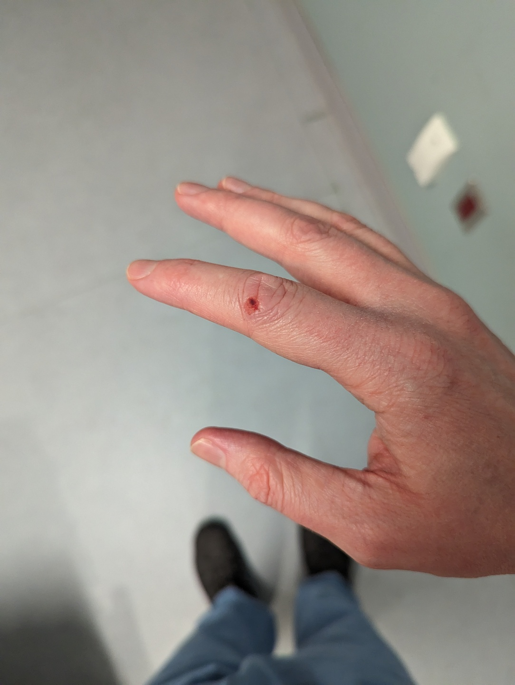
{kind=link}
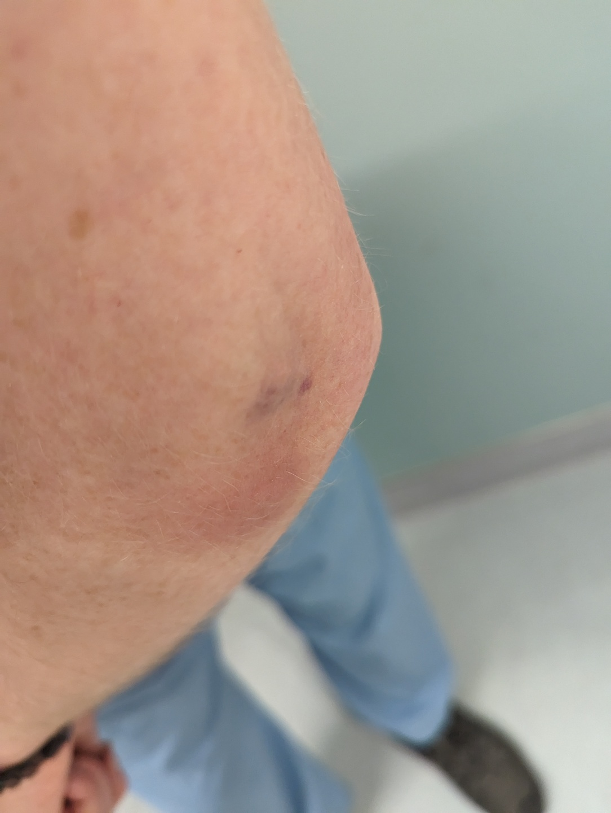
These are injuries I sustained while trying to hold the apartment door closed while the police were using the battering ram.
Private Room (first night)
{kind=link}
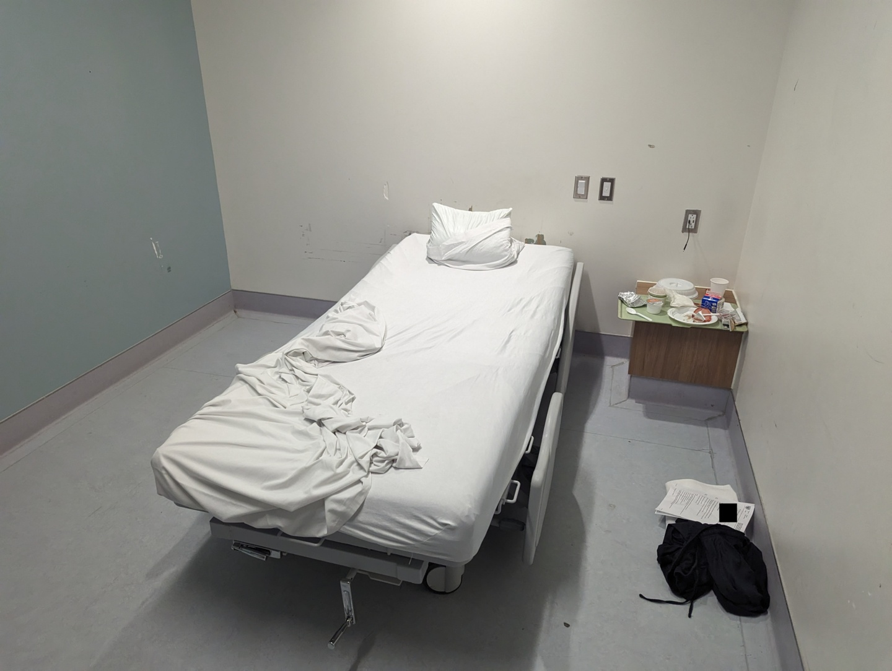
The room I stayed in for the first night. It was a basic room but it was not that bad. I was not far from the bathroom and I was able to charge my phone. If I was homeless I would be grateful to be here probably.
Meal Receipts
{kind=link}
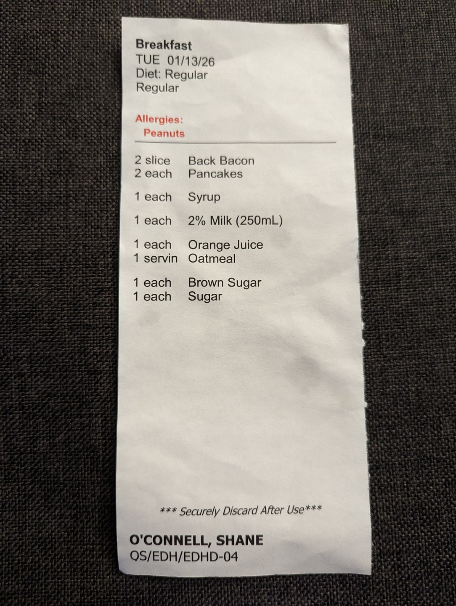
{kind=link}
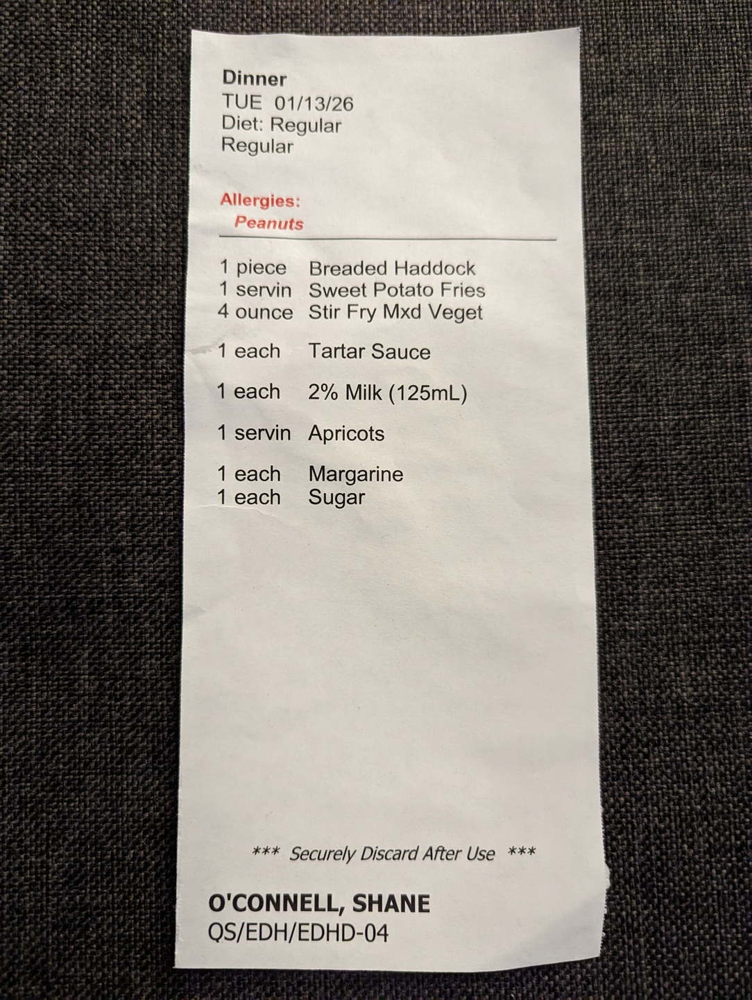
These are some receipts for two of the meals I had when I was at CAMH. I was never asked what I wanted to eat, they would just bring something. I have no idea why it says that I have a peanut allergy, because it is not true. I like peanut butter and consume it regularly. Maybe my parents told CAMH that I had a peanut allergy just to mess with me in some way.
The quality of the food was alright. It was free food, so I feel like I should not complain too much, however I did ask them every time if they had a vegetarian option and they kept giving me non-vegetarian food anyway.
Private Room (second night)
{kind=link}
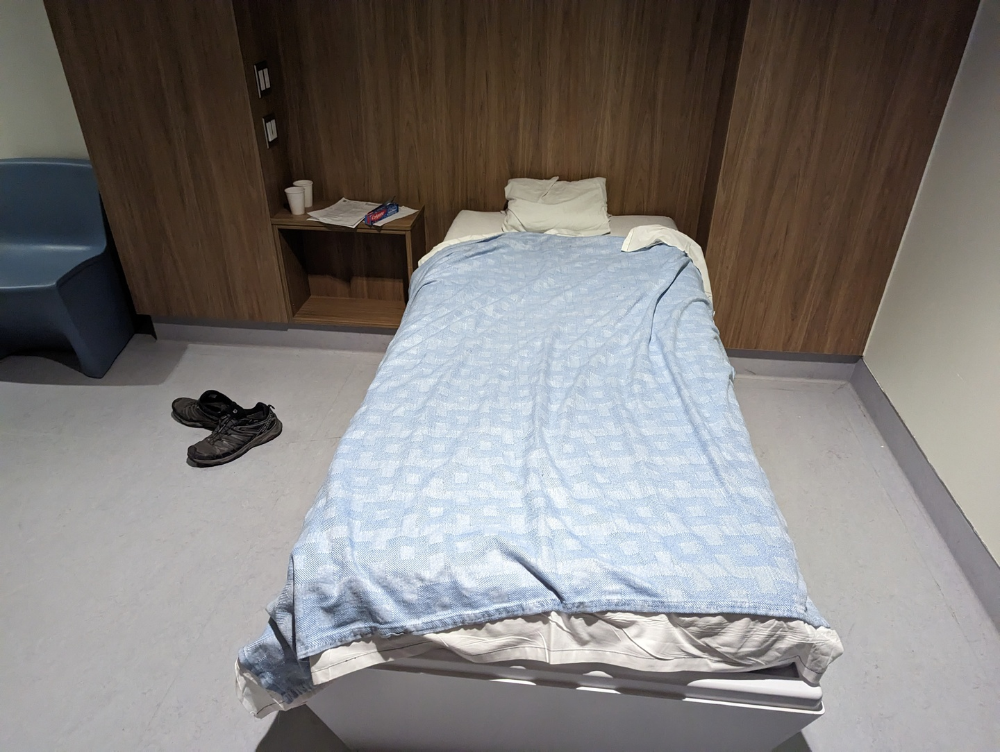
The room I stayed in for the second night was much better. I had a private bathroom, and the door had a lock that I could open using a wrist band, so other patients could not walk in.
Faucet
{kind=link}
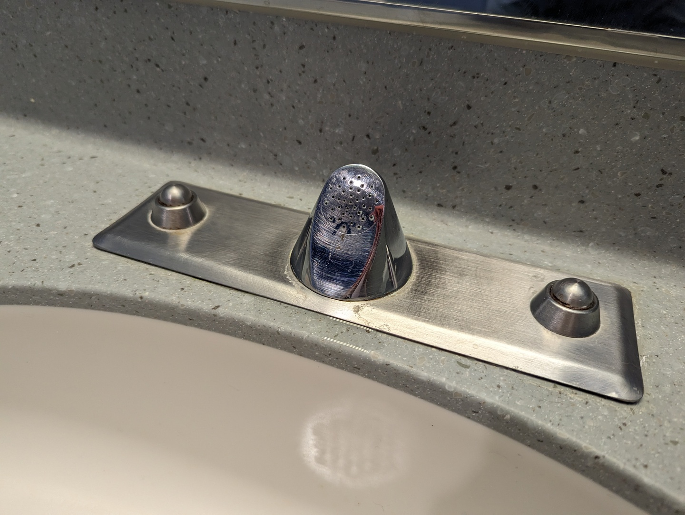
{kind=link}
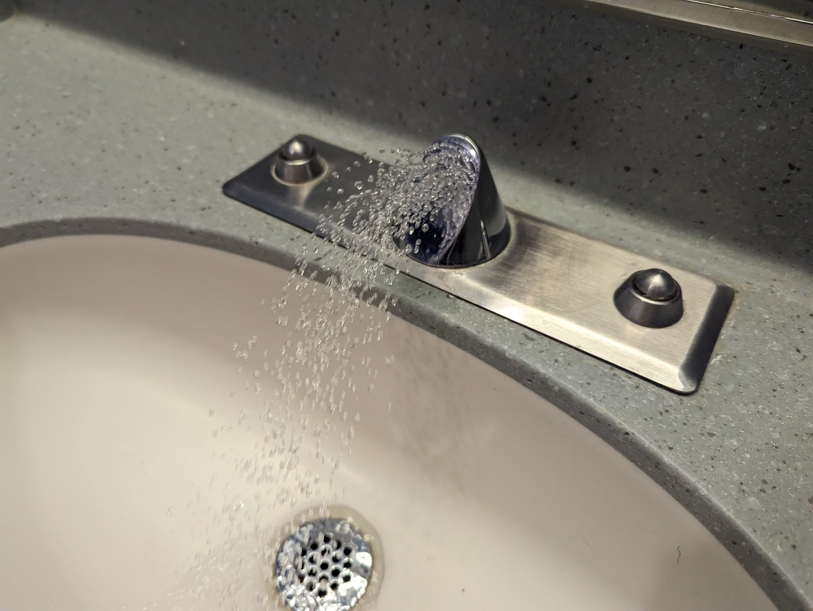
All of the sinks in CAMH appear to use this faucet design. My guess is that it was designed to be a faucet that is difficult to hurt yourself with, which is why it is so minimal and does not stick out far from the sink.
Unfortunately, it appears that these faucets are sometimes connected to water supplies with low pressure. I have encountered faucets where the water does not have enough pressure to cause the stream to actually separate from the faucet, and so the water instead drips down the face of the faucet. This makes it extremely difficult to wash your hands. You can rub your hands directly on the face of the faucet, however this means touching the faucet and only works for places on your hands that can be placed directly onto the surface. The alternative is to make a little cup with your hands to collect water, and then try to splash the water from the cup onto the part of your hands you are trying to clean. It is not straightforward.
CAMH Information Sheet
{kind=link}
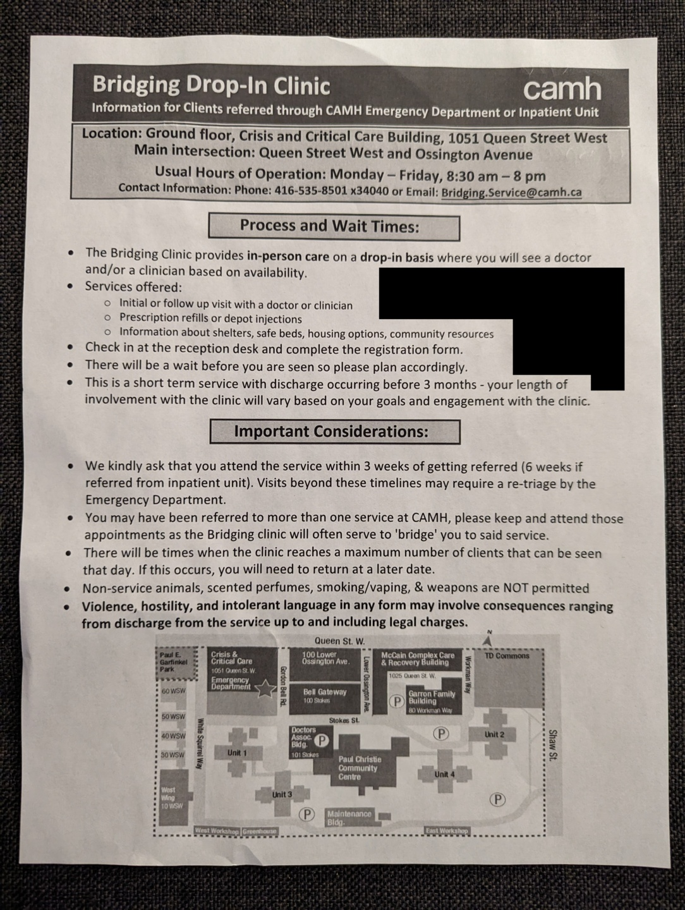
Another copy of the CAMH information sheet. I already have two copies of this sheet from previous visits, so I definitely know how to get there.
On the back of this sheet was where the people at CAMH wrote "unspecified schizophrenia spectrum and other psychotic disorder", along with the date (2026-01-15) and the name of the doctor. I consider that to be the first moment where I was officially informed that the doctors at CAMH were diagnosing me with a specific mental illness. I disagree with that diagnosis, as I described earlier.
Apartment Door

{kind=link}
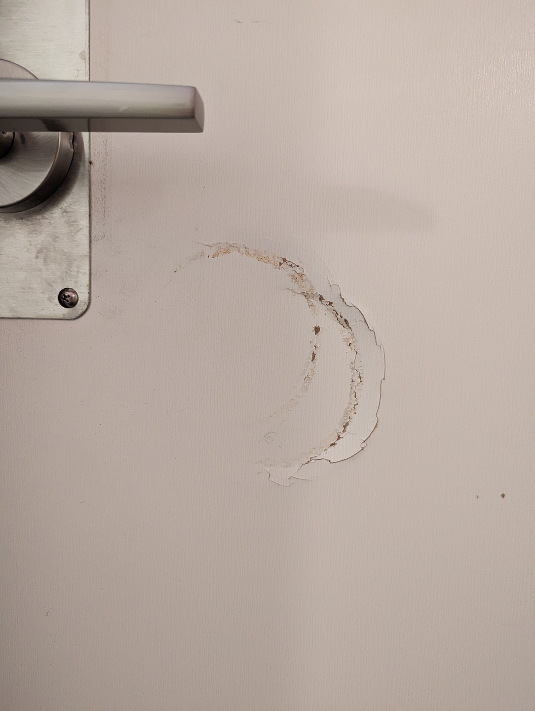
The damage to my apartment door caused by the police using a battering ram.
Last Update: 2026-01-23